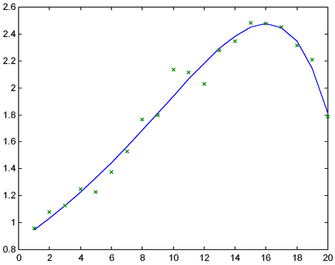

| / Home |
» help mprony
MPRONY Fits a sum of exponential functions to data by a modified Prony
method.
B = MPRONY(Y,T,P) approximates Y(i) by a weighted sum of P
exponentials sum_j=1^p A(j)*exp(B(j)*T(i)). The T(i) are
assumed equally spaced. B and A may be complex, although the
sum will be real if the data are.
Starting values for the B(i) are optional supplied by
MPRONY(Y,T,P,BSTART). The A(i) and the fitted values are
optionally returned by [B,A,MU] = MPRONY(Y,T,P,BSTART).
This function is very effective on smaller data sets with T(i+1)-T(i)
not too small and P not too large.
» t = (1:20)';
» atrue=[1; -0.1];
» btrue=[0.1; 0.2];
» y = exp(t*btrue')*atrue + 0.1*randn(20,1);
» [b,a,mu]=mprony(y,t,2);
» disp([a b])
-0.0488 0.2265
0.9158 0.0967
» plot(t,mu,t,y,'x')
